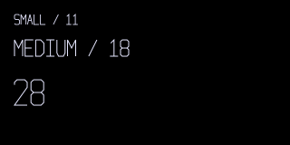
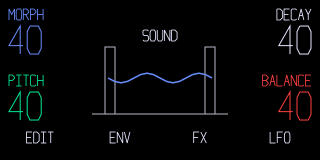
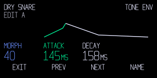
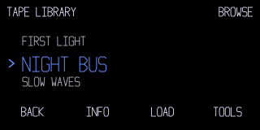

02 / TYPE
Three Sizes. No Tiny Fallback.

Small for names, units and keys. Medium for edit values. Large for playing. Shorten or paginate when text runs long.
A COMMUNITY DESIGN KIT FOR THE ORIGINAL OP-1
Four colours. Three text sizes. One instrument.
A shared starting point for synths, effects and tools that feel at home.



These are renders of original reference components. Schematic lettering is supplied so you can use the kit without TE assets. The font guide explains how to check faithful previews locally with your own stock font.
02 / TYPE

Small for names, units and keys. Medium for edit values. Large for playing. Shorten or paginate when text runs long.
03 / CONTROL
Keep each control’s label, value and visual cue connected to its encoder. Retain names and positions so colour is never the only clue.
04 / DRAW LESS
Use named SVG blocks and prebuilt states. Hide unused geometry, update on change and keep static work separate from live drawing. Retained nodes still cost raster work unless pixels are actually cached.
Visibility, caches & smooth edges ↗Made For People.
Readable By Agents.
JSON tokens, dependency-free components, C constants, SVG checks and the op1-design skill.
npx skills add squarewave-studio/op1-mods
Defaults are recommendations. Stock behaviour, community observations and new proposals are identified in the source notes.
05 / CREDITS
Thanks to op1hacks, op1r, pcppcp and contributors, Hundekraft and Maiko for publishing their work. Teenage Engineering makes the OP-1.
GIN uses Eric Lewis’s libpo32 and kits adapted from CNTR RNDM. No kits or third-party drawings are part of this design kit.
These tools are free. A tip helps me keep building them.
Buy Me A Coffee ($5) · Buy Me Lunch ($10) · Buy Me Dinner ($20) · Choose Your Own Amount